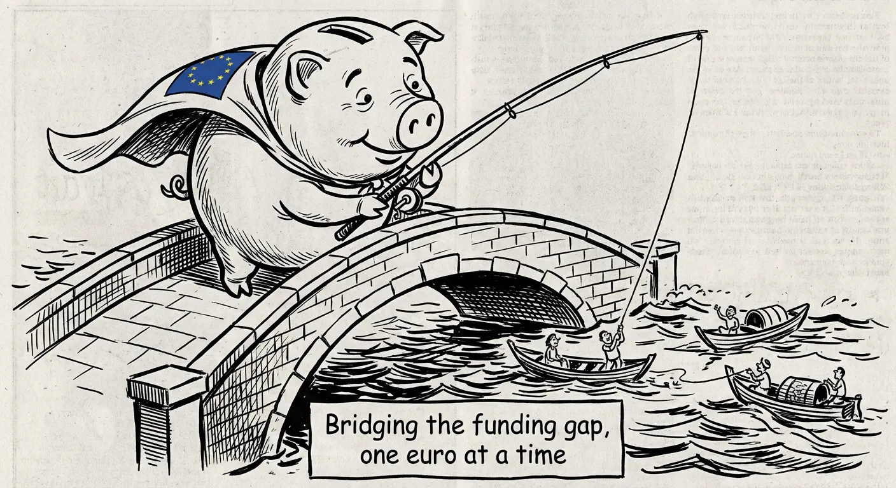

2026-02-05
technology

When AI assistants become advertising assistants
Sam Altman got exceptionally testy over Claude Super Bowl ads
AI company Anthropic aired Super Bowl ads mocking competitor OpenAI's plan to show ads in ChatGPT, leading to a heated r...
technologyartificial intelligenceadvertising
2026-02-05
technology
Vision correction: Now accepting monthly payments!
As it preps Specs for the masses, Snap’s Q4 shows revenue growth but fewer daily...
Snap is trying to expand beyond social media advertising into hardware with their AR glasses Specs, while seeing mixed f...
technologysocial mediabusiness
2026-02-05
technology

Bridging the funding gap, one euro at a time
Mundi Ventures closes on €750M for Kembara, its largest deep tech and climate fu...
Spanish venture fund raises €750M to support European deep tech and climate startups, aiming to help them survive beyond...
technologyventure capitalstartups
2026-02-05
politics

When free trade agreements aren't so free after all...
Concerned that FTA may cut access to medicines in India, rest of the developing ...
Medical aid group MSF warns that EU-India trade deal could restrict access to affordable generic medicines in developing...
politicshealthcareinternational trade
2026-02-05
politics

Deadline magic: When bureaucrats think calendars can solve decades-old problems
Maoist killed in encounter with security personnel in Chhattisgarh's Bijapur
Government sets March deadline to end Maoist insurgency in Chhattisgarh, with increased encounters and fatalities report...
politicsbureaucracysocial_commentary
2026-02-05
politics

Build it and they will learn... eventually
CM Nitish Kumar announces opening of colleges in all 534 blocks of Bihar
Bihar CM announces plans to open colleges in all 534 blocks by 2026, starting with 213 new colleges in phase one to impr...
politicseducationdevelopment
2026-02-05
business

"Don't worry, I'm just here to enhance your productivity!"
How Anthropic move is just a trailer of AI-pocalypse
Anthropic's new AI automation tool causes panic in tech stocks as markets realize AI could replace IT services rather th...
businesstechnologyautomation
2026-02-05
business

Sorry sir, are you important enough to discuss our future?
AI Impact Forum: The room you can’t afford to miss
A high-level AI business forum limits attendance to senior decision-makers only, emphasizing exclusive participation ove...
businesstechnologyartificial intelligence
2026-02-05
business

The Great Indian Inheritance Obstacle Course
Documents to sell inherited property in India
NRI siblings in UK need complex documentation and legal process to sell inherited property in India and transfer funds o...
businesspropertybureaucracy
2026-02-05
sports

When bowling down the middle means playing both sides
Fergus O'Neill moves to Sydney Sixers amid talk over Victoria future
Cricket bowler switches teams from Melbourne to Sydney amid speculation about state loyalty. His career move highlights ...
sportscricketcareer
2026-02-05
sports

Fourth time's the charm... or is it?
DC's fourth shot at elusive trophy as RCB look to make winning a habit
Delhi Capitals and Royal Challengers Bengaluru face off in WPL cricket final. DC seeks first trophy in fourth attempt wh...
sportscricketWPL
2026-02-05
sports

Right then, who's up for first-class cricket?
Sheffield Shield team news - all the squads as the tournament resumes
Australian cricket teams juggle player availability as Sheffield Shield tournament resumes, with many star players absen...
sportscrickethumor
2026-02-04
technology

The Great Animation Un-cancellation Show
After backlash, Adobe cancels Adobe Animate shutdown and puts app on ‘maintenanc...
Adobe reverses decision to shut down Animate software after customer backlash, puts it in maintenance mode instead of di...
technologysoftwarecorporate
2026-02-04
technology

When autopilot meets auto profits
Uber appoints new CFO as its AV plans accelerate
Uber promotes new CFO with autonomous vehicle expertise as company accelerates plans for driverless taxis. They aim to b...
technologyautomationtransportation
2026-02-04
technology

Digital marketplace or digital mandi?
SNAK Venture Partners raises $50M fund to back vertical marketplaces
Two venture capitalists launch a $50M fund called SNAK Ventures to invest in digital marketplaces, focusing on industrie...
technologyventure capitaldigital transformation
2026-02-04
politics

Justice may be blind, but the numbers don't lie
HC issues notices to Bar Council of India and A.P. on plea for 33% quota for wom...
Andhra Pradesh High Court considers petition for 33% quota for women lawyers in Bar Association elections. Court issues ...
politicsgender_equalitylegal_system
2026-02-04
politics

The Electric Bus Rally: Service or Serve?
Electric buses in 23 routes in the city: Mayor
Thiruvananthapuram city plans to launch electric buses on 23 routes, though there are disagreements about suburban cover...
politicspublic transportbureaucracy
2026-02-04
politics

Rights and Regulations: Some things don't need balancing
Maternity leave is a right, can’t be clubbed with regular leave: Kerala HC
Kerala High Court rules that maternity leave is a fundamental right that cannot be combined with regular leave. Case inv...
politicswomen's rightshealthcare
2026-02-04
business

Welcome to the board meeting - both artificial and intelligent!
Building in AI this year? This is the room to be in
A tech article discusses how AI hackathons are becoming serious business venues where real products are developed, rathe...
businesstechnologyartificial intelligence
2026-02-04
business

Time flies, but insurance claims crawl
Check claim settlement ratio of health & GI for 2026
Insurance companies' claim settlement efficiency for 2024-25 revealed, showing wide variations in how quickly different ...
businessinsurancehealthcare
2026-02-04
business

Three legs are better than none!
Yumnam Singh takes oath as Manipur Chief Minister
After a year of President's rule following ethnic tensions, Manipur gets a new Chief Minister with two deputy CMs from d...
businesspoliticsgovernance
2026-02-04
sports

Breaking records? Just another day at youth camp!
India ace record chase to make Under-19 World Cup final
India's Under-19 cricket team chases down record target of 311 runs to reach World Cup final, overcoming early dropped c...
sportscricketyouth
2026-02-04
sports

When African springs meet Scottish highlands on the pitch
Frylinck, Steenkamp set up Namibia's win against Scotland
In a T20 World Cup warm-up match, Namibia defeated Scotland by 6 runs in a high-scoring game. Scotland came close but fe...
sportscricketcultural_contrast
2026-02-04
sports

Sometimes the best cricket practice is no practice at all!
Mandhana and Rodrigues chill out before WPL final
Two cricket team captains discuss taking breaks and relaxing before a big final match, emphasizing the importance of not...
sportscricketwellness